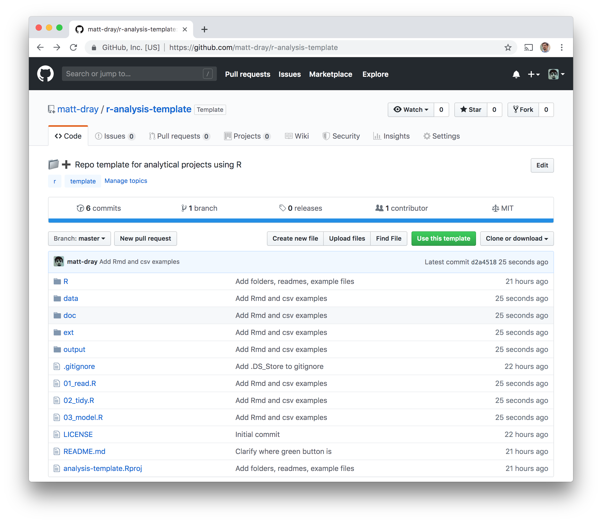

tl;dr
I made a simple GitHub repo template for analysis projects. You can go to the repo and hit the ‘use this template’ to try it out.
Tada
I’ve made a lightweight repo template to make it easier for me to start very simple analysis projects with R.
It’s opinionated, but others may find it useful.

To use it, either:
- Go to the repo and click the green ‘use this template button’
- Append the repo URL with ‘/generate’ to go straight to the repo copying page
The screen looks like when you create a new repo from scratch, but it mentions that ‘the new repository will start with the same files and folders’ as the template repo. Add a name and description for the repo copy and hit the ‘create repository from template’ button.

That’s it.
Basic template structure
Much of the sentiment for creating this sort of folder structure has been described in detail elsewhere, including by Richard Fitzjohn and Joris Muller.
In short, the root has:
- executable R files, separated into ‘sensible’ units of analysis (‘read’, ‘tidy’, etc)
- an R Project file (
.Rproj)
- a .gitignore for R, with
.DS_Store added
- a
README.md to summarise the project as a whole
There are folders for:
- R functions (
R/)
- raw, untouched, read-only data sets (
data/)
- report source and output files (
doc/)
- external files (
ext/), such as pre-trained models
Of course, these can be added to, removed or renamed as required.
Bulk it up
It’s not enough to have structure alone. There are plenty of guides for code and file creation. For example:
- files should be named appropriately (advice from Jenny Bryan)
- code should be consistent and follow a style guide (e.g. the tidyverse style guide), which is made easier with a linter, like {lintr}
- READMEs are provided throughout, but documentation should continue in the analysis files themselves, with sensible comments throughout
The repo template focuses primarily on folder structure. It misses out some additional tools, including some that need a bit of further setup. You should think about including them anyway. For example:
There’s a certain amount of personal preference in the tools and techniques for these things and it’s probably best left to the user.
Let me know what you think is missing or what you would add.
Alternatives
Copying a repo template might not be optimal for you, but you can generate the structure for an analytical project in other ways.
One example is the {starters} package from Locke Data, which can be installed with remotes::install_github("lockedata/starters"). The create_analysis_project() function sets up a project folder for you with various arguments to add certain folders and setup things like dependency management, git and continuous integration.
Another option is to set up your analysis as a package, as outlined by Thomas J Leeper, for example. Jenny Bryan and Hadley Wickham’s {usethis} package provides lots of functions to help you create a package and add things to it, like create_project() and use_git().
I like these two options more than the template, to be honest. The template is really for quick, simple analysis; mostly for my own purposes.
Environment
Session info
Last rendered: 2023-07-25 21:44:48 BST
R version 4.3.1 (2023-06-16)
Platform: aarch64-apple-darwin20 (64-bit)
Running under: macOS Ventura 13.2.1
Matrix products: default
BLAS: /Library/Frameworks/R.framework/Versions/4.3-arm64/Resources/lib/libRblas.0.dylib
LAPACK: /Library/Frameworks/R.framework/Versions/4.3-arm64/Resources/lib/libRlapack.dylib; LAPACK version 3.11.0
locale:
[1] en_US.UTF-8/en_US.UTF-8/en_US.UTF-8/C/en_US.UTF-8/en_US.UTF-8
time zone: Europe/London
tzcode source: internal
attached base packages:
[1] stats graphics grDevices utils datasets methods base
loaded via a namespace (and not attached):
[1] htmlwidgets_1.6.2 compiler_4.3.1 fastmap_1.1.1 cli_3.6.1
[5] tools_4.3.1 htmltools_0.5.5 rstudioapi_0.15.0 yaml_2.3.7
[9] rmarkdown_2.23 knitr_1.43.1 jsonlite_1.8.7 xfun_0.39
[13] digest_0.6.33 rlang_1.1.1 evaluate_0.21